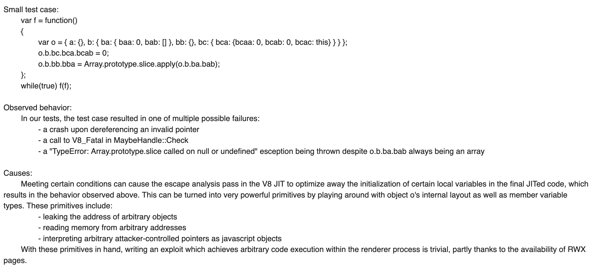

With software engineering, speed and memory are the basic measurement-benchmarks. For programming language implementations, the two affect each other heavily. In JIT compilers, that means storing more things in memory to speed up the program drastically. It also means putting time into garbage collection to keep memory down, spending time to try to eliminate allocations and deciding where to put some piece of data.
Escape Analysis is a technique that determines the behaviour of how a variable (more specifically, a pointer) is used in a certain scope, and whether it not it escapes that scope (the scope is usually a function). Escape analysis allows the program to stack allocate (here is an article on Stack vs Heap allocations) when it's determined the variable will not be used outside of the scope or in other cases, try to eliminate the allocation completely.
I'm writing this away from family during (Canadian) Thanksgiving so thank you kind and curious friends for coming to read this!
Also thanks to Chris Seaton who was my intern mentor back when I actually worked on compilers and taught me sooo much, and JF Bastien who showed me how to look into
clangand has just been generally helpful. Props to Alberto who fixed a bug in Go I ran into while investigating escape analysis in Go in a matter of hours after I opened an issue, and thanks to Leo White who answered my question about the lack of escape analysis in OCaml.
For a little background on how programming languages work, skim through my post A Deep Introduction to JIT Compilers: JITs are not very Just-in-time.
Pypy Escapes Boxing
Pypy puts a lot of work into minimizing boxing, which is done through escape analysis. Boxing is when a primitive is boxed into an object wrapper type, such as an int to Integer in Java. Object oriented language implementations often utilize boxing (sometimes called auto-boxing), including JavaScript, C#, Haskell and others! Computers natively understands types like booleans and integers, but not objects, and unfortunately many languages need to store most of their data as an object and not the primitive. For example, 314 as a constant can be stored as a primitive on the stack, but when 314.toString() is executed, 314 has to be boxed so that the method can be run on the object. Unboxing is performed to extract the value.
Boxing and unboxing is an expensive operation, with .NET citing 20x the time for boxed assignment and 4x the time for unboxing assignment (when you explicitly cast back). Pypy also has expensive boxing operations, as it's not just assigning/computing more values but organizing them into a heap structure.
Pypy considers this to be its second most important problem, and uses "virtual objects", also called virtualisation. It's a fancy term that means they avoid creating the entire heap structure, store the primitive value (not on the heap) and mock any object-operations that need to happen. While the virtual object is used in some applicable scope, read and writes are done to the virtual object without the expense of boxing/unboxing. Even more computation is saved as since the virtual object exists and no guards need to exist to verify information about the value in the object, whereas guards are usually in place to check the class after loading a value.
Pypy will virtualise onto the stack optimistically and then allocate later should it become necssary. Escape analysis is really powerful in JITs mostly because jitted langauges tend to be more dynamic, but also because they can very aggressively stack allocate. Languages that compile once have to be completely confident that the escape analysis is valid (or also compile code in case of failure) and make decisions about how far it should look to determine a scope. JITs can kind of just hope it'll work and then actually do the allocation if it doesn't -- and remember what happened for next time (though that makes it sound a lot easier than it actually is).
For example;
x = 0
for i in range(10000):
# Integer.random() is not an actual stdlib operation in Python, I used it to indicate a non-primitive object is created
y = Integer.random() + x
x += y * 4 # this would also involves boxing without escape analysis, since operators are implemented as methods
print(x)
There are two cases of virtualisation here. The first is y, which will be virtualised as it does not escape. Thus in the second line of the loop, Pypy would no longer need a guard for the value of y. This saves us a lot more than just constructing and traversing the heap structure. When boxed, Pypy has to check the class types of y and x due to the dynamic-ness of Python -- can these values be added? If they can, where is the method to describe how they are added (Python allows operator overloading)? It also has to recreate a boxed object to reassign to y and in more complex cases could leave behind additional garbage for the GC.
x on the other hand, does escape, but it's still valuable to virtualise it, for that allocation is in a loop and the escape is outside the loop. When a jump instruction comes in (loop ends), it’ll come with code that actually allocates x for the garbage collector and future use. Another case of escape analysis can be found in methods;
def foo():
x = {"A": 1, "B": 2}
return x["A"]
In this case, x will likely never escape and the allocation isn't even needed to execute the rest of the function. This particular case may actually be constant-folded away (the constant is replicated at usage sites), but abstractions of this pattern will use escape analysis. Escape analysis also often takes place for language-internal operations, and I'll describe how Javascript features and internals makes escape analysis very important.
How Javascript Uses Escape Analysis in Language Internals
The most complex question about escape analysis (other than maybe "how do I implement it") is probably "is this only beneficial to very shortlived variables, and if so how does it help much?". As mentioned in the Pypy example, it is sometimes to protect your program from allocations that are made by the language implementation rather than the programmer. Here's a quick example in Javascript (example taken from this PDF, which has a corresponding talk that might be elementary at this point in the blog post).
function bar(o) {
return Math.sqrt(o.x*o.x + o.y*o.y)
}
function foo(i) {
return bar({x: i, y: i})
}
One might not expect anything to allocate even without escape analysis, but when you create the object to pass into bar it is created and allocated by default since it now exists for bar and can escape bar. This is a good example of a full allocation elimination, the allocation isn't just moved into the stack, rarther bar is inlined and then the usage of any object at all can be optimized away.
LuaJIT Allocation Sinking
In most languages that box, essentially everything gets a box (except null and undefined types, though NaN in Javascript is boxed into a Number so terms and conditions may apply). LuaJIT is smarter off the bat and manages to not box floats and is good at not allocating (when I say "allocate", I mean to the heap) constants.
LuaJIT's does something called Allocation Sinking, which is based on escape analysis and the result is very powerful allocation removals, doing things that even the age-old Hotspot can't do. Pypy implemented a vast majority of the things that LuaJIT did (see this 2012 paper) though I'd want to describe some of these optimizations in the context of LuaJIT rather than Pypy because LuaJIT gave me free examples.
When data is allocated, there's typically a "store" and then a "load" later on. Store-to-load forwarding is what it sounds like, getting the subsequent "load" function to receive data directly from the location of storing. This is used to have powerful allocation sinking, more commonly called "code motion" (or specifically, loop-invariant code motion as JITs tend to be concerned with loop optimizations). These examples do not use executable Lua code.
local x = 0
for i=1,1000 do
x = y + z -- i don't think this actually allocates in lua, but let’s pretend it does
local a = i + x
end
What we want is for x to be declared outside of the loop, as it saves us that allocation every time we iterate. This could be done through code motion.
local x = y + z
for i=1,1000 do
a = i + x
end
In the example below, the allocation of i to y should be moved to be inside the conditional. Note that this optimization is not quite covered by the base strategy described for Pypy.
for i=1,1000 do
local y = i
if random() > 0.5: -- but does not escape this if statement
x = y + z
local a = i + x
end
-- should become
for i=1,1000 do
if random() > 0.5:
local y = i
x = y + z
local a = i + x
end
Here, LuaJIT defers the write and forwards the data to the read. As a result, the allocation and read are very much removed. The forwarding destination is the point of escape, which is where the escape analysis comes in.
LuaJIT has an explicit mark-and-sweep pass to do sinks. For an example that highlights the allocation sinking, LuaJIT performed on par with C++ and 700x faster than Lua. Specifically (taken from the LuaJIT Blog):
local ffi = require("ffi")
local point
point = ffi.metatype("struct { double x, y; }", {
__add = function(a, b)
return point(a.x + b.x, a.y + b.y)
end
})
local a, b = point(1.5, 2.5), point(3.25, 4.75)
for i=1,100000000 do a = (a + b) + b end
print(a.x, a.y)
This example does some things that are familiar from the Pypy example -- it creates temporary objects while performing the arithmetic (point(a.x + b.x, a.y + b.y)). These two under-the-hood allocations are expensive, but LuaJIT optimizes them away! Even Hotspot fails to make this optimization.
Important note that LuaJIT does not describe this as escape analysis, and particularly specifies that escape analysis is not ideal for dynamic languages (because there are too many points of escape in dynamic languages), but the intention of finding points of escape and saving allocation times is the same even though the traditional "if escape then heap_allocate else stack_allocate" is not an accurate description of allocation sinking.
Where have all the interpreted languages gone
This blog post doesn't cover interpreted languages! The obvious answer is that because they're interpreted, there's no room for them to do escape analysis, and unlike JITs they can't recompile or move from interpretation to compilation. However, most interpreted languages (Python, Ruby, PHP) do have a compile step where bytecode is emitted, so there's no technical reason why escape analysis couldn't be performed at that step. These languages need to maintain fast compile times, which is the broad reason why it isn't done. Additionally, as mentioned by Mike Pall of LuaJIT, dynamic languages have too many points of escape, which is handle-able by JITs but would be harder to implement as a part of static compilation.
Some Security Escaped V8
Javascript's V8 engine does escape analysis similarly to the way described in Pypy and LuaJIT. In 2017 though, a bug with overly aggressive escape analysis became a significant vulnerability for Chrome browsers and escape analysis was disabled for about a week before they reimplemented it. This is an Extremely Cool exploit and I'm surprised there wasn't a write-up on it.

The Chrome team marked this as "high" with a $7500 reward, and the bug is fairly intuitive -- something isn't allocated when it should be and errors will occur due to something not existing when it should be. The reason it's a security vulnerability is unrelated to escape analysis and requires too much background to fully explore in this post.
But for an entire Chrome Version, this key optimization was just... gone? I assume compiler speed in the scope of web-browsing speed is but a minor factor due to all the caching and network times, but other than that I don't actually know what to expect with escape analysis gone. It probably would've been very impactful for NodeJS, but the vulnerability had to do with the browser API so Node was not at risk.
So... benchmark time! I'll be running Octane, which is not a recommended benchmark suite (retired in 2017) but is pretty big and came with my build of V8. I didn't bother too much with scientific process, and ran it on my laptop for three runs (V8 recommends 10). I ran without CPU frequency scaling or limiting the number of cores though I could make an argument that I should've.
I rebuilt V8 (I could've also tested with Chrome builds, but those seemed harder to find/built and maybe there were other performance affecting charges), based on commit history here. This compares the impact of this security patch, and not the impact we would get by disabling EA now (it got a big overhaul!).
benchmark: score | master_ | % |
===================================================+==========+========+
Richards: 28998.3 | 29093.8 | -0.3 |
DeltaBlue: 51902.6 S 51187.0 S 1.4 |
Crypto: 32698.2 | 33198.3 | -1.5 |
RayTrace: 54845.4 S 80116.3 | -31.5 |
EarleyBoyer: 41575.6 | 42536.7 | -2.3 |
RegExp: 8115.0 S 8302.8 | -2.3 |
Splay: 22830.1 S 23609.1 S -3.3 |
SplayLatency: 39286.6 S 40214.6 S -2.3 |
NavierStokes: 37347.0 | 37557.0 | -0.6 |
PdfJS: 31527.6 | 32036.1 | -1.6 |
Mandreel: 39278.4 | 39593.9 | -0.8 |
MandreelLatency: 117204.4 S 119061.7 S -1.6 |
Gameboy: 75636.3 S 76792.6 S -1.5 |
CodeLoad: 22562.2 S 23094.8 | -2.3 |
Box2D: 75097.7 S 79478.3 | -5.5 |
zlib: 65881.2 | 65934.8 | |
Typescript: 23753.4 | 23682.8 | 0.3 |
Octane: 38420.0 S 39782.1 | -3.4 |
---------------------------------------------------+----------+--------+
From this we can observe that disabling escape analysis could not have been that bad for Chrome, with a 3.4% reported slowdown (though it is a significant optimization for a compiler). RayTrace is quite an outlier there, and I find it amusing since the Raytracer probably deals with a lot of objects to represent points and shapes in space, which is exactly what the example in the previous Javascript and Lua sections were doing.
With the new escape analysis, disabling it cost 6.3% instead of 3.4%, which indicates that the new escape analysis is better. These benchmarks are good enough to make note of the importance of escape analysis, what kind of operations it works well on but not good enough to say that "escape analysis makes Javascript 6.3% faster".
Escape Analysis with LLVM-backed languages
Escape analysis happens for statically compiled languages too! I'll go through an example with clang, Julia (which is jitted, but statically compiled with type information), and then touch on what happens with Rust. LLVM is a toolchain which handles code generation for many languages, and will optimize them in mostly the same way.
Here is the C++ code I'll work with for this example. I started by running it through clang, which is a C++ (and friends) compiler with an LLVM backend.
int foo(int a, int b, int c) {
int *t = new int[3]; // the new operator in cpp is conventionally an allocation, though it is implementation defined
t[0] = a;
t[1] = b;
t[2] = c;
int r = t[0]+t[1]+t[2]; // because this is the only usage of `t`, we should be able to optimize away the allocation of `t`
delete[] t; // the compiler has to understand that this `delete` operation doesn't require an allocation of `t` to exist
return r;
}
It's easy to tell that escape analysis happens here with the emmitted assembly - we get only three instructions; lea, add and ret. lea computes an address of X and stores it in Y, add is the arithmetic (the lea does a part of the addition) and then ret is a return. The instructions for foo begin when r is intialized and assigned. gcc will not make this optimization, though this is not at all an indication that gcc is less powerful than clang.
I would not call this escape analysis outside of a blog post though it describes a similar process of allocation elimination. This is better described as constant propogation, as the escape analysis is not really checking escape out of a loop or funciton, but that the only escape (which is reading for this case) of the values. LLVM does explicitly run escape analysis for more conventional examples shown previously though this is easier to work with as an example.
// this is C and not C++ code but it's all `clang` anyway
#include <stdlib.h>
void indirect(int *x) {
x[0] = 14;
}
int foo() {
int *x = (int *)malloc(sizeof(int)); // malloc usually means allocations
indirect(x);
int y = x[0];
free(x);
return y;
}
LLVM does it quite well, with this example getting the allocations optimized away. Both indirect and foo only has a mov instruction (copies between registers). So there are actually two cases, the first being x not being allocated and the second is y not being allocated. Nothing is allocated, though it makes sense that a simple additional function call with a pointer does not make it that much harder for LLVM (though it would make it much harder for more dynamic languages).
To see where these optimizations happen, we can look at the LLVM code (an intermediate representation for LLVM, higher level than assembly). I looked for a znam instruction which clang uses to make allocations. For the first example, there is only one allocation for the array t. Then with the options -mllvm -print-after-all I get some output with the LLVM code at various steps, specified such as "value propogation" or "dead argument elimination".
After a run of "Combine redundant instructions", znam disappears, and the instructions are about halved (this is not proportionate to speed). store operations are also gone after this step, (they belong to the t[n]= {a|b|c} lines). Exploring the implementation you can also see how they explicitly look for escapes.
Below is the same program in Julia. Working with this optimization in Julia is more difficult because it is mostly JIT compiled, with functions compiled (statically) as they are called. Julia also has the challenge of being garbage collected. For the below, I rigged a compilation to LLVM code with @code_llvm.
function foo(a, b, c)
t = Int64[a, b, c]
r = t[0]+t[1]+t[2]
clear!(:t) # Free! The Memory
r
end
This time I'm looking for store instruction which is used to write to memory. Julia does not optimize away the creation of the array t, probably partially due a specific Julia feature or the increased complexity of LLVM code due to Julia's dynamic-ness relative to C++ (it is generally unclear to me what blocks this). Julia would probably do a better job at less convoluted constant propagation and it does do fine on escape analysis, as seen on the below example.
function foo() # same example from earlier with Pypy!
x = 0
for i = 1:123
y = rand(1, 5) # if rand is not used, the entire function gets turned into a constant value return!
x += y * 4
end
x
end
For this, I didn't even have to look for store or anything GC related, the code is the same if I replace y * 4 with rand(1, 5) * 4.
Other LLVM-backed languages include Swift, Crystal and Rust. If you've heard anything about Rust, it's probably something along the lines of "yeah manual memory management is hard but Rust makes it easier". If I worded it as "Rust makes it very easy/automatic to statically check memory" then I'd be closer to saying "Rust's memory is automatically managed, just not at runtime". If you've heard another thing about Rust it's probably "borroooowww cheeeeckkkeeeerrr". Look into Rust's Ownership Structure and you might find that the borrow checker basically prevents you from accidentally letting something get stuck in the heap when it escapes. I certainly would not call the borrow checker "escape analysis" but it's a relevant concept in Rust that is rather parallel to escape analysis.
Go
Golang Escape Analysis is the most documented between all the language implementations I described. Go doesn't use LLVM for code generation and is garbage collected. With Go, I can build with -gcflags -m (with -m multiple times for more verbosity) to see all the escape analysis decisions (I could do this for V8 as well). Go's escape analysis is very focused on "does it escape the function".
I found a cool example to showcase Go Escape Analysis, pulled from this Stack Overflow question.
func main() {
const alloc int = 65536
now := time.Now()
loop := 50000
for i := 0; i < loop; i++ {
allocation := make([]byte, alloc)
i += len(allocation) * 0
}
elapsed := time.Since(now)
fmt.Println(elapsed)
}
The number 65536 probably looks familiar to you -- it's exactly 64K. The Stack Overflow question asks why setting alloc to 65535 instead of 65536 causes this code to speed up by 10000x (by my unscientific measurements on my local machine). Turns out with the slightly larger size, Go decides that the alloc must escape to the heap. The SO answer is more or less "this is just the GC running because escape analysis" but we have time to get into it. Here is the debugging output with 65535
./alloc.go:17:14: inlining call to fmt.Println // inlining
./alloc.go:13:15: make([]byte, alloc) does not escape // decides that `alloc does not escape scope`, correct
./alloc.go:17:14: elapsed escapes to heap // decides `elapsed` escapes? weird.
./alloc.go:17:14: []interface {} literal does not escape // irrelevant, related to println
Before I move onto why the alloc escapes, why does elapsed escape when it seems fairly obviously only used in main? Go will count a function call as escape, and thus printing elapsed causes it to be allocated. This is not usually too much of a problem, since inlining will occur first, but fmt.Println is complex enough that the inlined function contains another function call (this is shown when I add more -ms). My non-professional opinion is that I expected more aggressive escape analysis and inlining, but I still see no evidence that Go escape analysis has a lot of room for improvement since I don't understand Go language internals or core philosophies that might prevent more aggressive escape analysis.
Anyway, when I set it to 65536 here is the expanded output to explain why Go thinks alloc needs to go to the heap.
./alloc.go:13:15: make([]byte, alloc) escapes to heap:
./alloc.go:13:15: flow: {heap} = &{storage for make([]byte, alloc)}:
./alloc.go:13:15: from make([]byte, alloc) (non-constant size) at ./alloc.go:13:15
What's up with this "non-constant size" business? I even used the keyword const! If I manually constant propogate and don't use the alloc const, it still escapes to heap. The answer is a bug that I reported and was shockingly fixed with two reviewers in less than 24 hours and I am so impressed with the Go devs. Anyway, the correct reason is "too large for stack". I did a quick search for why that number is 64K, and it seems mostly OS related and maybe hardware? Open to emails explaining max sizes for stack allocated values.
A key to stack allocation for Golang is that you have to know the lifetime of the object at compile time - which is why escape analysis is hand in hand with "can I stack allocate this?". There are a bunch more general rules that can be found with a quick Google search, though they're not specification guaranteed.
Other Compilers that do Escape Analysis
Lisp (and dialects) do escape analysis, and a lot of the papers about escape analysis will be about Lisp and Scheme (earliest paper I could find on the subject is 1990). This means almost nothing because there are so many lisp dialects and implementations of each of them, but here is an article about Kildall's Algorithm for Escape Analysis on a Lisp Compiler. Stalin, a Scheme compiler used a lot of data-flow analysis and advertises very powerful escape analysis.
GraalVM will of course run Escape Analysis for any Truffle language. They call it "partial escape analysis", which is what was described in Pypy where the allocation is delayed, or only run at the point of escape. See the paper on this.
Hotspot (Java compiler) of course also does escape analysis, though I get the impression that it's not as "partial" as newer JITs (this may be biased since I can find papers about newer JITs going "haha i am better than hotspot" but not Hotspot going "excuse me my escape analysis is actually great"). One could probably run some tests with JVM backed languages like Java or Scala.
OCaml does not do escape analysis, but will do things that are more like the constant propagation I talked about with LLVM. OCaml is garbage collected, but it is very well garbage collected (omg goals) and Escape Analysis did not help much (see thread)
let foo p x =
let r = ref x in (* `r` will not be allocated *)
while is_not_finished !r do
r := do_something !r
done